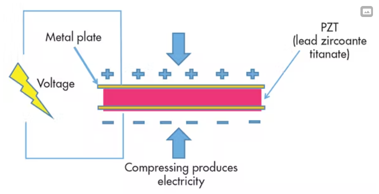
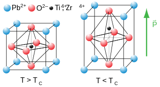
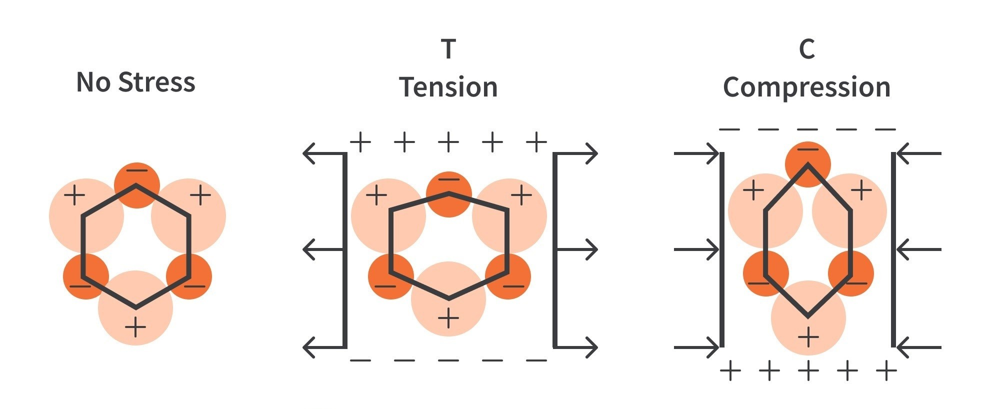

Why piezoelectrics?
Piezoelectric materials have special properties which result highly useful for this project.
See, piezoelectrics are specific materials which, when brought under any sort of mechanical stresses,
originate electrical charges. This way, piezoelectric materials conform an easy way to convert mechanical
energy into electricity.
Now, how come the piezoelectric effect result indeed handful for the project? In the end, an electronic drumkit
consists in a bunch of piezoelectrics connected to a module capable of reading electrical inputs and converting
them to sound. We shall take advantage of the direct piezoelectric effect.
Direct piezoelectric effect
As stated, compressing a piezoelectric material produces electricity. Piezoceramic materialis placed between the two metal plates.
For piezoelectricity to be generated, it needs that material to be compressed or squeezed.

In piezoelectric crystals, the unit cell is not symmetrical, and the electrical charges are perfectly balanced, therefore
piezoelectric crystals are electrically neutral.However, stretching or squeezing a piezoelectric crystal deforms the structure, pushing some
of the atoms closer together or further apart. This upsets the balance of positive and negative, and causes net electrical charges to appear.
This effect continues through the whole crystal structure so net positive and negative charges appear on opposite, outer faces of the crystal.


PZT material of the piezoelectric sensors